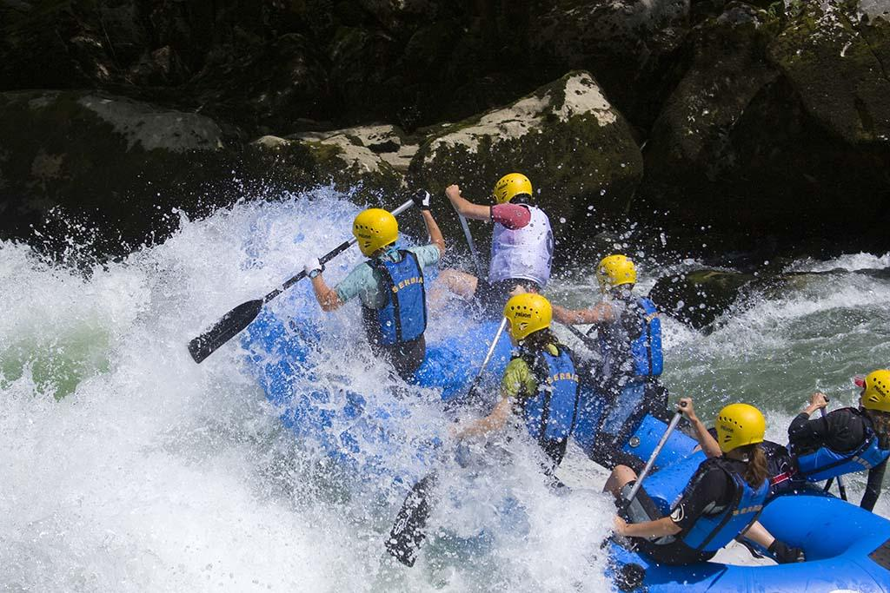
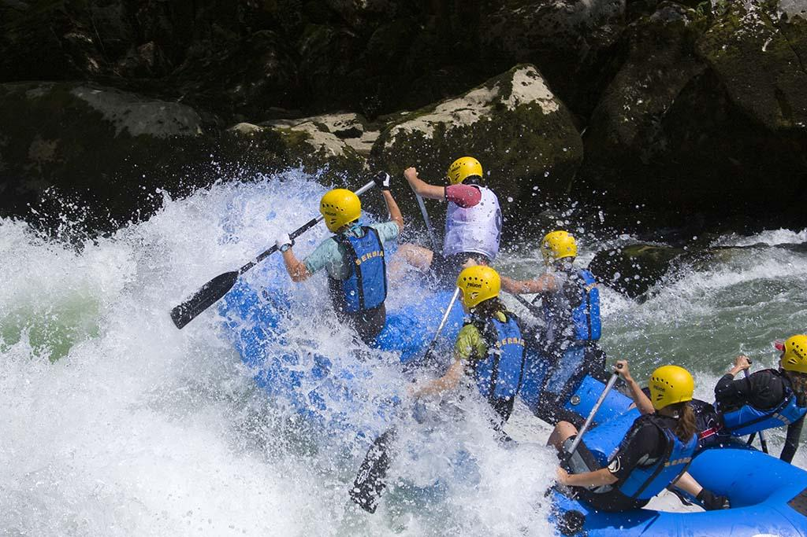

The Rafting
.jpg)
We are committed to building an adventurous community at our rafting location, full of people who love adventure, challenge, and an adrenaline rush. Our goal is to give people a place to go on exhilarating rafting trips that push them beyond their physical capabilities and act as metaphors for negotiating life's erratic currents.
In our quest to create an adventurous community, we understand the transformative power of challenging experiences. Our rafting trips are not just about navigating turbulent waters; they are opportunities for personal growth and self-discovery. We believe that by pushing the boundaries of physical capabilities, individuals can tap into reservoirs of resilience, courage, and teamwork. Our experienced guides are not just skilled navigators but also mentors who inspire participants to embrace the unpredictability of life's currents. We foster a sense of camaraderie among our community members, encouraging them to share stories of triumph, learn from setbacks, and celebrate the collective spirit of adventure that binds us together. As we propel ourselves into the exhilarating unknown, we invite all thrill-seekers to join us in creating memories that go beyond the rapids, leaving an indelible mark on the river of life.
History
"The Rafting" was founded in 2010 by four adventurous friends—Jake, Mia, Alex, and Zoe—in the charming village of AquaVale. Their combined love of whitewater rafting and their varied skills in environmental science, engineering, and business management led to the founding of a firm that put environmental sustainability first while offering thrilling whitewater activities. The gorgeous AquaTorrent River, which has the correct balance of easy stretches and severe rapids, was carefully surveyed by the creators to ensure that it would be the best location for their exciting excursions.
"The Rafting" distinguished themselves and soon acquired a name for their dedication to sustainability. The founders engaged in river cleanup campaigns and used biodegradable materials as examples of environmentally beneficial methods. This enhanced the company's reputation as a trustworthy and compassionate enterprise while also striking a chord with eco-aware travelers. The company has added family-friendly trips, corporate team-building packages, and moonlit rafting expeditions to its list of activities throughout the years.
It developed into a major attraction for the neighborhood, bringing tourists from all around. In 2022, it celebrated its tenth anniversary with a lavish festival, commemorating ten years of life-changing experiences, enduring friendships, and favorable effects on both the environment and thrill-seekers. The story of "The Rafting" in AquaVale is a living example of the founders' enthusiasm, commitment, and the eternal bond between nature and adventure.


 
